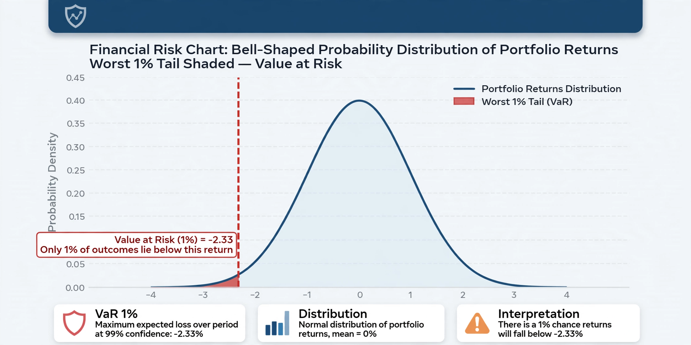

Market risk
Market risk is the risk of losses in positions arising from movements in market prices. It is the risk that the value of an investment will decrease due to changes in market factors such as interest rates, foreign exchange rates, equity prices and commodity prices. Market risk is sometimes called systematic risk, though in portfolio theory "systematic risk" more precisely denotes the undiversifiable component of an asset's total risk.

Types
- Interest rate risk — losses from movements in interest rates or yield curves.
- Equity risk — losses from movements in stock prices or indices.
- Foreign exchange risk — losses from movements in currency exchange rates.
- Commodity risk — losses from movements in prices of energy, metals and agricultural goods.
Measurement
The most common measure of market risk is value at risk (VaR), which estimates the maximum loss expected over a given horizon at a given confidence level. Because VaR says nothing about losses beyond the threshold, regulators and risk managers increasingly supplement or replace it with expected shortfall (conditional VaR), the average loss in the tail beyond the VaR level. Stress testing and scenario analysis are used alongside statistical measures to capture extreme events.
Regulation and management
Under the Basel framework, banks must hold capital against market risk in their trading books; the Fundamental Review of the Trading Book (FRTB) moved the standard towards expected shortfall. Firms manage market risk through diversification, hedging with derivatives such as futures, options and swaps, position limits, and independent risk-management functions that monitor exposures against approved limits.
See also
References
Jorion, P. (2006). Value at Risk: The New Benchmark for Managing Financial Risk (3rd ed.). McGraw-Hill.
Hull, J. C. (2018). Risk Management and Financial Institutions (5th ed.). Wiley.